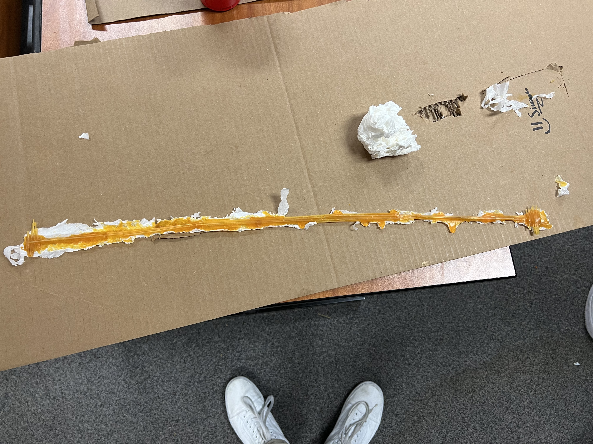

This is my first blog
09/02/22 This is my second blog. I learned to design on tinkercad. I learned how to create a website. We're building a Rube Goldburg Machine.
09/8/22 This is my third blog, so far I'm working in my group and its going great so far. We're still working the Rube Goldburg Machine. Mr.Poole isnt here today, very sad :( Queen Elizebeth died, rest in peace.
9/16/22
This week we have to work in our groups and its been going well. We also did a boat challange for challange day. Our Rube Goldburg Machine had a screw,lever, and wheels.
I love my group, its so much fun. When Mr.Poole wasnt here on thrusday, we did a E challange. We we're suppose to draw a E with measures and the switch with somebody and try to draw their E.
I am looking forward to work with my group again and have fun!
PDF
9/26/22
This is my fourth blog. This week Mr.Poole got covid so now he's not
coming to school till he gets better. Last week we were finishing up with our projects,
my group did will. I'm proud of them. We have a sub her name is Ms.Erekson, she is very pretty.
I hope Mr.Poole will get better soon.
9/30/22 This is my fifth blog we are working on our prostetic leg for our animal. I chose a lion because why not. Mr.Poole still has covid. We have a new sup now.
10/7/22 This is my Sixth blog. Mr.Poole is back! We were working on Laptop Dissection. It was fun but it was also fraustrating. Some of the screws wouln't come out but overall it was a fun project. I learned how to open up a computure.
10/24/22
This is my sventh blog. We worked on our rockets. I learned how to build
a rocket that can fly through air. Our rocket was prety good. It flew in the air
and did what it was suppose to. The rocket was made up of carbord,and
a coke bottel,hot glue.
11/10/22
This is my eight blog. This week we got into pares and worked on breadboarding.
We breadboarded LED circuts, paralle & series. I learned how to breadboard. For challange day
had a disscusion if taking a math course is better than counting
to 1,000,000. We came up that taking a math course is better.
11/18/22
This is my nine blog. This week we kept working on our
breadboarding and created patterns with it. I coded two patterns
and it actually worked. For challange day we had to come up with a
solution to cure cancer by filtering water. For Thanksgiving,
I am going to fest. Im going to eat the table and leave no crumbes.
I am going out with my friends and my side pice (jk). Overall, I am very
excited. I really need this break.
12/2/22
This is my tenth blog. This week wer're working on civial
engineering. Civial engineering is basically the structure of the earth.
I am working with groups to build a pasta brigh that
can hold water. So far were made a plan and its going good so far.
We had no challange day this week.
1/13/23
This is my eeventh blog. We just came back from winter break.
My winter break was really good. I got to spend time with family
and friends. This week we are working on business engineering.
We are basically recreating shark tank. My group came up with a
really good product, hopefully we'll win! Our final for this class
was this image below.

This is our presentation